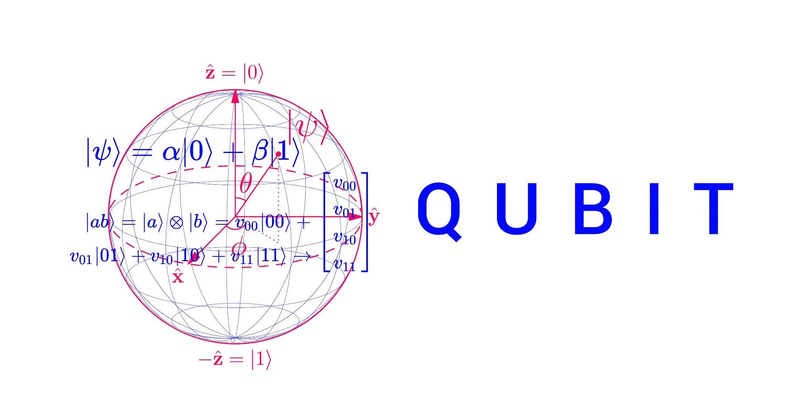

Important Concepts
Quantum mechanics is a highly complex and abstract field that is very different from classical physics. It is based on the principle of superposition, which states that a particle can exist in multiple states simultaneously. This principle is the basis of quantum cryptography, which uses the ability of quantum particles to exist in multiple states to transmit information securely.
In addition to superposition, quantum cryptography also uses the principle of entanglement, which is a phenomenon where two or more particles become connected in such a way that the state of one particle is dependent on the state of the other. This allows for the creation of a secure key that is used to encrypt the message.
A qubit is the basic unit of quantum information. It is a two-state quantum-mechanical system, such as the polarization of a single photon or the spin of a single electron. The two states are typically labeled as 0 and 1, and they correspond to the two possible outcomes of a measurement of the qubit. Qubits are the building blocks of quantum computers and are used in various other applications in quantum information science.

Random Information and Main Points
- Quantum cryptography uses the principles of quantum mechanics to secure communication between two parties.
- Unlike classical cryptography, which relies on mathematical algorithms to encrypt messages, quantum cryptography uses the properties of photons (particles of light) to transmit information securely.
- One of the key features of quantum cryptography is that it is impossible to eavesdrop on a communication without disturbing the photons being transmitted. This means that any attempt to intercept the message would be detectable, allowing the sender and receiver to take appropriate action.
- Quantum cryptography can be used to create unbreakable encryption keys, which can then be used with classical cryptographic techniques to create highly secure communication channels.
- The first demonstration of quantum cryptography took place in 1984, by Charles Bennett and Gilles Brassard.
- In 2004, the Swiss bank, UBS, became the first financial institution to use quantum cryptography to secure its communications.
- The Chinese government launched the world's first quantum communication network in 2016, using a satellite to transmit secure messages between Beijing and Vienna.
- Quantum cryptography is still an emerging field, with many challenges to overcome before it can be widely adopted. However, it has the potential to revolutionize the way we communicate and secure our data in the future.